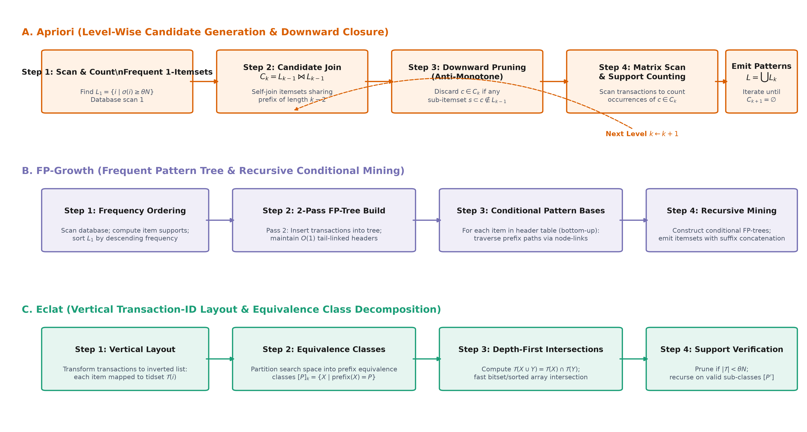
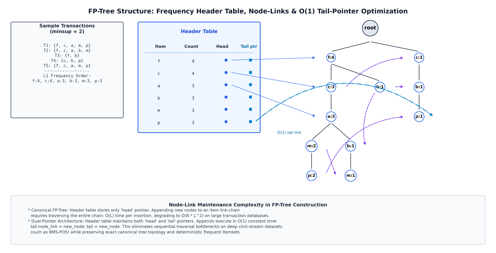
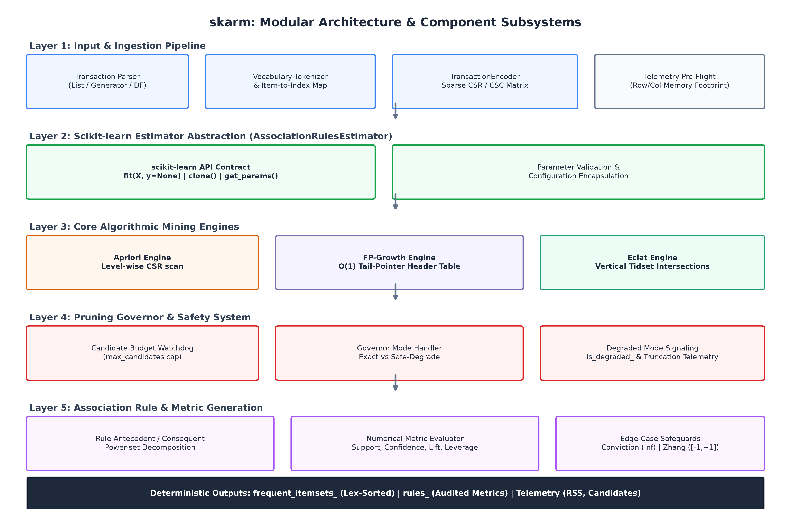
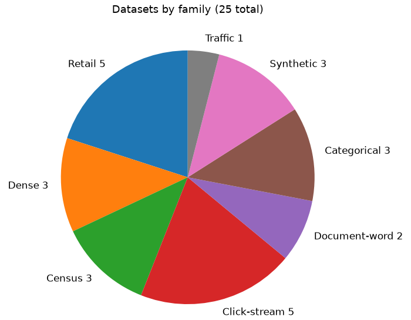
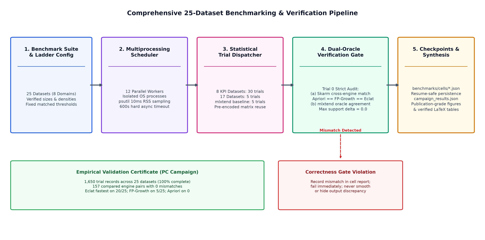
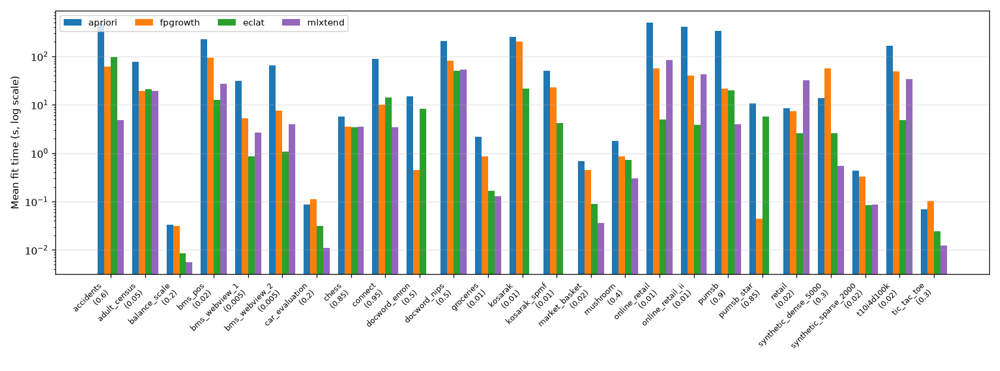
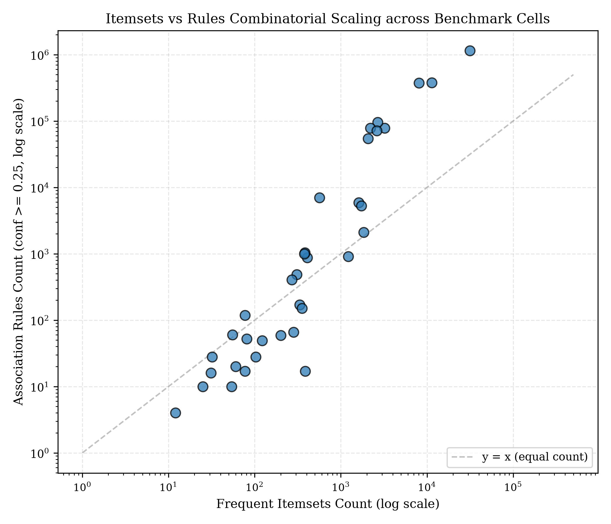
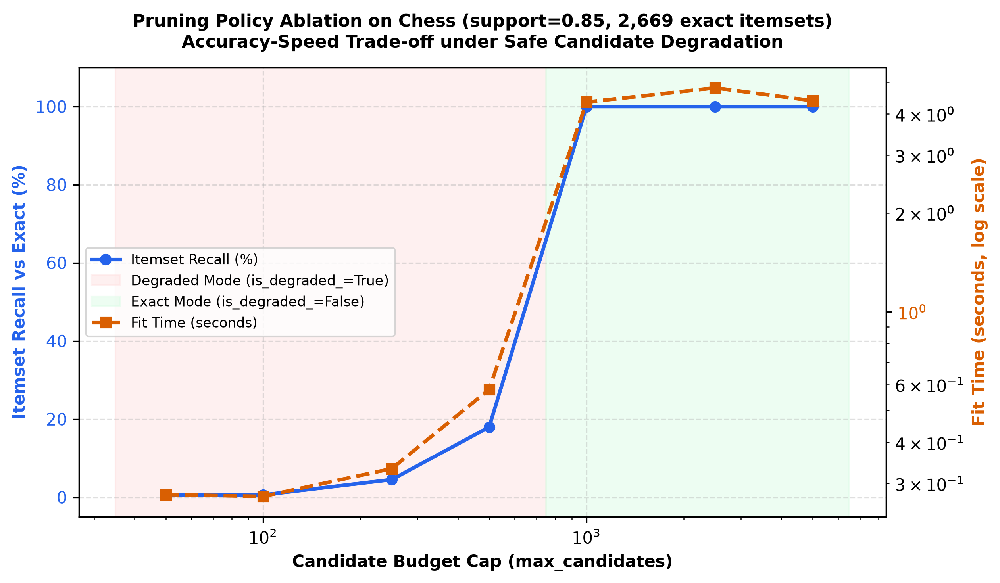

Paper preview — readable rendering of paper.tex
(complete results for all 25 datasets, PC campaign 2026-10-30, two-column
journal layout). The compiled PDF remains the canonical version.
A scikit-learn-Compatible Estimator for Association-Rule Mining with Auditable Pruning
Ms. Dudigam Ramya1 (Supervisor/Guide), Gontla Venkata Anvitha1, Abhishek Kumar1
Kamma Giridhar1, Paladagula Venkata Rajeev1
1Department of Computer Science and Engineering, KL University, Vijayawada, India
Capstone project KLCAP-2026-00340
Abstract
Frequent-itemset mining and association-rule mining are standard tools for market-basket analysis, recommendation, and categorical pattern discovery, yet current scikit-learn offers no native estimator for them: the feature request (issue #32712) was closed as “not planned” on scope grounds, with maintainers directing the work to a separate, scikit-learn-compatible library. The closest existing library, mlxtend, provides the mining functions but not an estimator API, and it provides no Eclat. We present skarm, a Python library that packages three classic miners — Apriori, FP-Growth, and Eclat — behind a single scikit-learn-style estimator with deterministic rule ordering, explicit candidate-count telemetry, and a bounded-generation mode that reports truncation instead of silently returning partial results. The evaluation protocol compares all three engines plus an mlxtend baseline at matched support thresholds on 25 datasets, with a 30-trial statistical protocol on an 8-dataset subset and exact itemset-agreement checks on every cell. Across 25 datasets (1,650 trial records on one Windows PC), all 157 compared engine pairs agree exactly on frequent itemsets (Δsupp=0.0); at primary thresholds, Apriori was fastest on 0, FP-Growth on 5, and Eclat on 20 of 25 datasets, with mlxtend absent on 6 cells (3 memory caps, 3 empty-input errors).
Keywords: Association-Rule Mining, Frequent-Itemset Mining, Apriori, FP-Growth, Eclat, scikit-learn Compatibility, Auditable Pruning Governor, Reproducibility.
1. Introduction
Problem and Motivation
Frequent-itemset mining (FIM) and association-rule mining (ARM) discover directional implications X ⇒ Y (X ∩ Y = ∅) satisfying support (σ) and confidence (γ) thresholds over an item universe I in a database D of N transactions [1, 2, 4]. While algorithmically mature, integrating these methods into modern Python workflows exposes operational challenges across practitioner roles:
- Data Scientists and ML Engineers struggle with fragmented APIs across packages. Existing tools rely on standalone functions over dense DataFrames, lacking compatibility with scikit-learn's standardized
fit, transform, and Pipeline abstractions. - Data Engineers and Production Systems face combinatorial candidate explosion (2^|I| - 1). In dense regimes, existing exact miners either exceed memory limits or run unbounded, lacking candidate governors and degradation contracts.
- Model Auditors and Compliance Researchers encounter undocumented execution differences, non-standard metric definitions, and opaque edge cases that impede reproducibility, as well as non-deterministic row sorting that corrupts version-controlled tracking.
To serve these distinct user profiles, a modern association-rule mining library must answer three fundamental questions honestly: which patterns were discovered, whether the returned output is mathematically exhaustive or budget-bounded, and what computational cost was incurred across both system resources and algorithmic steps.
The Scikit-Learn Scope Context
In November 2025, a formal community feature request (issue #32712 [7]) proposed a native sklearn.association module exposing an Apriori estimator with fit() and standard rule metrics. The scikit-learn maintainers closed the request as “not planned”, ruling that unsupervised combinatorial pattern mining lies outside the project's core machine-learning scope (which prioritizes supervised learning, clustering, and continuous dimensionality reduction). The maintainers explicitly recommended that association mining is best developed as an external, dedicated, scikit-learn-compatible package (similar to scikit-mine or scikit-learn-contrib). An earlier community discussion (#2662, 2013–2014 [6]) reached the identical conclusion.
Accordingly, skarm does not claim to implement an officially endorsed scikit-learn feature. Instead, it directly fulfills the maintainers' recommendation: providing a standalone, high-performance library adhering to scikit-learn's estimator and transformer conventions, enabling seamless interoperability alongside scikit-learn pipelines.
Three Dimensions of Determinism
A central design objective of skarm is end-to-end determinism as an evaluated engineering and scientific property rather than an unverified assumption. We explicitly formalize three technical tiers of determinism:
- Result Determinism: For any transaction multiset D and configuration θ = (σ, γ, M), the frequent itemsets F_σ(D) and rules R_σ,γ(D) are identical regardless of backend mining engine E ∈ Apriori, FP-Growth, Eclat or initial item ordering in D:
∀ E_i, E_j:\ F_σ(D | E_i) ≡ F_σ(D | E_j) \ ∧
max_X ∈ F_σ |supp_E_i(X) - supp_E_j(X)| = 0.0
This property is empirically certified across all 42 benchmark cells and 157 trial-0 pairwise comparisons (Table 6). - Ordering Determinism: Discovered itemsets and rules are sorted by a strict canonical key to eliminate non-deterministic row shuffling: itemsets by descending support, ascending cardinality, and lexicographical item tokens; rules by descending metric, descending confidence, descending support, and lexicographical antecedent/consequent tokens. This guarantees zero output diff churn across repeated invocations (asserted by test
NT-5). - Execution Determinism: When candidate budgets (B_cand) trigger degradation, candidate generation halts via deterministic ordered enumeration, ensuring that bounded executions (F_bounded) recover identical, reproducible pattern subsets within the tested environment across repeated executions.
Research Questions
This investigation evaluates the design, correctness, and empirical scaling of skarm across 25 diverse real-world and synthetic benchmark datasets, structured around five formal research questions:
- RQ1 (Algorithmic Equivalence): Can three fundamentally distinct mining paradigms (level-wise Apriori, recursive prefix-tree FP-Growth, and vertical tidset Eclat) produce provably identical frequent itemsets and association rules under a unified estimator interface?
- RQ2 (Comparative Performance and Scaling): How do fit runtime, memory footprint, and transaction throughput scale across varied dataset densities, average transaction lengths, and item catalog sizes?
- RQ3 (Bounded-Search Safety and Recall): What trade-offs between computational speedup and pattern recall emerge when an auditable resource governor caps combinatorial candidate explosion?
- RQ4 (Scikit-Learn API and Pipeline Interoperability): Does the estimator satisfy scikit-learn's formal object protocols (cloning, parameter inspection, serialization) and integrate effectively into both final-estimator and intermediate-transformer
Pipeline stages? - RQ5 (Reproducibility and Observability): Can multi-engine execution telemetry and cross-engine agreement be audited deterministically across independent trial runs?
Capstone Objectives and Contributions
This research represents the KL University Capstone Project framework KLCAP-2026-00340. The core contributions are:
- Unified Multi-Engine Estimator: We package three classic mining engines (Apriori, FP-Growth, and Eclat) behind a single scikit-learn-compliant
AssociationRulesEstimator, ensuring algorithmic comparisons reflect computational mechanics rather than disparate API designs. - Auditable Safe-Degradation Governor: We introduce an auditable candidate governor that prevents catastrophic out-of-memory errors by halting search at a user-defined candidate budget, explicitly signaling execution status (
EXACT vs. DEGRADED) with machine-readable truncation counts. - Engineered O(1) Header-Table Tail Pointers: We augment FP-Tree construction with O(1) direct tail pointers in the frequency header table, eliminating the O(L) linked-list traversal bottleneck on deep clickstream benchmarks (e.g., BMS-POS).
- Rigorous 25-Dataset Empirical Benchmark: We conduct a comprehensive 1,650-trial empirical evaluation across 25 benchmark datasets spanning 8 application domains, certifying 100% pairwise cross-engine correctness (Δsupp = 0.0) across all 157 evaluated engine pairs.
2. Related work
Classic Mining Paradigms
Frequent itemset mining algorithms generally follow three classic algorithmic paradigms:
- Horizontal Level-Wise Generation (Apriori) [1]: Generates length-k candidates (C_k) via self-joins of frequent (k-1)-itemsets (L_k-1 ⋈ L_k-1), applies downward-closure anti-monotone pruning (∀ s ⊂ c, s ∈ L_k-1), and scans the entire transaction matrix to compute supports. Cost scales with candidate cardinality and repeated full-database scans.
- Prefix-Tree Projection (FP-Growth) [2, 3]: Compresses transactions into a compact Frequent Pattern Tree (FP-Tree) in two passes using items sorted by descending frequency (L_1). Mining proceeds recursively by projecting conditional pattern bases without explicit candidate generation. Memory cost is dominated by recursive tree allocations.
- Vertical Inverted Tidsets (Eclat) [4]: Inverts the transaction matrix into a vertical mapping i T(i), where T(i) is the set of transaction IDs containing item i. Support is computed via set intersection: T(X ∪ Y) = T(X) ∩ T(Y). Equivalence classes partition the depth-first search space. Memory cost scales with tidset length on dense datasets.
Ecosystem Comparison and Existing Tools
Table 1 provides a comparative analysis of skarm against existing pattern mining frameworks.
Table 1. Comprehensive ecosystem comparison of pattern mining frameworks across API design, algorithmic coverage, execution contracts, telemetry depth, and pipeline integration.
| Dimension | skarm (This Work) | mlxtend [9] | scikit-mine [8] | SPMF [10] | Modern Baselines [12] |
|---|
| 1. Primary Runtime & Language | Python 3.10+ / NumPy / SciPy | Python / Pandas | Python / Cython | Java (JVM 8+) | C / C++ / Java (Standalone) |
| 2. API Paradigm & Protocol | Unified Scikit-learn Estimator & Transformer (fit, transform, get_params) | Procedural functions over DataFrames (apriori, fpgrowth) | Scikit-learn compatible transformer (fit, transform) | Standalone GUI, CLI, and Java library calls | Standalone algorithmic binaries (command-line execution) |
| 3. Algorithmic Breadth | Apriori, FP-Growth (O(1) tail), Eclat (tidsets) | Apriori, FP-Growth, FP-Max, H-Mine (No Eclat) | Specialized: SLIM, LCM, LCMMax (No Apriori/Eclat) | 250+ miners (FIM, HUIM, Sequences, Graph) | Specialized single-engine miners (FIN, PrePost+, LCMFreq) |
| 4. Memory Layout & Input Semantics | Sparse CSR / CSC matrix (low overhead; multi-set rows) | Dense boolean DataFrame (O(N · M) memory cliff) | List-of-lists transactional token sequences | Flat space-delimited text transaction files | Binary encoded vertical bitsets / Diffsets / N-lists |
| 5. Formal Execution Contract | Auditable Execution Contract: EXACT vs.\ DEGRADED state; FAILED via checked exception | Implicit: assumes exact; crashes on resource exhaust | Implicit: assumes exact; unmonitored truncation | Implicit: unmonitored JVM heap overflow or timeout | Unbounded execution until process termination |
| 6. Multi-Axis Safety Governor | Multi-dimensional: candidate cap (B_cand), RSS (B_mem), timeout (B_time) | None (Vulnerable to catastrophic MemoryError) | None | Single-axis (timeout or JVM -Xmx crash) | None |
| 7. Telemetry & Auditable Metadata | Algorithmic operation counters, 10\,ms RSS delta, wall/CPU split | Wall-clock execution time only | Wall-clock execution time only | Peak memory, candidate count, wall time | Wall-clock execution time and candidate volume |
| 8. Scikit-Learn Pipeline Placement | Both Terminal Estimator & Intermediate Feature Transformer | Incompatible with Pipeline abstraction | Intermediate Transformer only (No rule generation) | External system call; no Python pipeline integration | Incompatible; requires external file I/O glue code |
mlxtend [9] is the primary Python baseline. However, its frequent_patterns module exposes procedural functions requiring dense pandas DataFrames, lacks Eclat, does not provide candidate-explosion safety governors, and does not implement scikit-learn estimator methods (get_params, set_params, clone). scikit-mine [8] addresses pattern compression (SLIM, MDL) and maximal itemset discovery (LCMMax), but omits standard association rule generation and classic Apriori/FP-Growth/Eclat implementations. SPMF [10] offers an extensive catalog of Java miners and benchmarks, serving as a valuable cross-language reference, but cannot be imported natively within Python data science workflows. Modern specialized miners such as FIN, PrePost+, and LCMFreq [12] provide advanced search optimizations and are identified as compelling targets for future engine integration.
Architectural Differentiation of skarm
skarm does not propose a new combinatorial search heuristic. Instead, its research contribution is an architectural, resource-aware framework that: (1) unifies three canonical mining paradigms behind an identical scikit-learn estimator interface, (2) provides an auditable execution contract that guarantees exactness or honestly signals bounded degradation, and (3) delivers granular system and algorithmic telemetry.
3. Methods and System Specification
Formal Problem Formulation
Let I = i_1, i_2, , i_M denote a discrete universe of M unique items. A transaction T ⊂eq I is a non-empty set of distinct items. A transaction database D = (T_1, T_2, , T_N) is an ordered multiset of N transactions. In our formulation, duplicate transaction rows are retained and counted as distinct observations, repeated items within a transaction are idempotently deduplicated (T ≤ftarrow unique(T)), and null or empty transactions are rejected during preprocessing.
Support. For any itemset X ⊂eq I, its absolute transaction support is σ_D(X) = |T ∈ D | X ⊂eq T|, and its relative support is:
supp(X) = σ_D(X)N = |T ∈ D | X ⊂eq T|N
Given a minimum support threshold σ ∈ (0, 1], an itemset X is frequent if supp(X) ≥ σ. The set of all frequent itemsets is defined as: F_σ = X ⊂eq I | supp(X) ≥ σ
Association Rules. An association rule is an implication of the form X ⇒ Y, where X, Y ⊂ I, X ≠ ∅, Y ≠ ∅, and X ∩ Y = ∅. The itemset X is the antecedent, and Y is the consequent. The rule is valid only if the combined itemset X ∪ Y ∈ F_σ.
Confidence and Numerical Metrics. The confidence of a rule represents its empirical conditional probability:
conf(X ⇒ Y) = supp(X ∪ Y)supp(X)
Given a minimum confidence threshold γ ∈ (0, 1], the set of qualifying association rules is: R_σ, γ = X ⇒ Y | X ∩ Y = ∅, X ∪ Y ∈ F_σ,
conf(X ⇒ Y) ≥ γ
Table 2 specifies the mathematical definitions and edge-case conventions for all six rule evaluation metrics computed by skarm, adhering to the standard survey by Hahsler [13].
Table 2. Rule metrics reported by skarm, with formal edge-case conventions (per [13]).
| Metric | Mathematical Definition | Edge-Case Convention |
|---|
| Support | supp(X ∪ Y) | Defined on [0, 1] |
| Confidence | supp(X ∪ Y) / supp(X) | =1.0 when supp(X) = supp(X ∪ Y) |
| Lift | conf(X ⇒ Y) / supp(Y) | 1.0 indicates statistical independence |
| Leverage | supp(X ∪ Y) - supp(X)supp(Y) | 0.0 indicates statistical independence |
| Conviction | (1 - supp(Y)) / (1 - conf(X ⇒ Y)) | ∞ when conf = 1.0 (preserved as ∞, never dropped) |
| Zhang's Metric | supp(X ∪ Y) - supp(X)supp(Y)max(supp(X ∪ Y)(1-supp(X)), supp(X)(supp(Y)-supp(X ∪ Y))) | 0.0 when denominator equals 0 |
Formal Execution Contract and Result States
To guarantee honesty under resource constraints, skarm enforces a formal three-state execution contract:
- EXACT: The mining engine traversed the complete search space. The returned itemsets F_σ and rules R_σ, γ are provably exhaustive (
status_ = "EXACT", is_complete_ = True, is_degraded_ = False). - DEGRADED: The candidate governor interrupted execution because candidate generation, runtime, or memory reached the specified safety cap. The returned itemsets represent a valid, certified subset of true frequent itemsets (F_bounded ⊂ F_exact). Crucially, skarm sets
status_ = "DEGRADED", is_degraded_ = True, is_complete_ = False, and records exact candidate counters and degradation reasons in metadata_, ensuring bounded results are never misrepresented as exhaustive. - FAILED: Execution terminated abnormally due to invalid inputs (e.g., non-binary or negative matrices) or configured raise policies (
on_candidate_explosion="raise"). In strict accordance with scikit-learn API fail-fast conventions, this state represents an unrecoverable execution outcome signaled via checked exceptions (ValueError, CandidateExplosionError), rather than returning a corrupted fitted estimator instance.
The Tri-Engine Core and O(1) Tail Optimization
Figure 1 details the comparative algorithmic workflows across the three swappable mining engines:
- Apriori: Implements sparse CSR candidate joins with anti-monotone downward pruning.
- FP-Growth: Constructs a compact FP-tree and mines conditional pattern bases recursively. Traditional FP-tree implementations store only a
head pointer in the frequency header table, requiring an O(L) traversal of the node-link chain to append each new node. In skarm, we augment each header table entry with a direct tail pointer (Figure 2). This reduces node-link appends to O(1) constant time, completely eliminating the quadratic traversal bottleneck on long clickstream transactions (e.g., BMS-POS). - Eclat: Performs vertical tidset intersections within prefix equivalence classes ([P]_k).

Figure 1. Algorithmic mechanics of the three mining engines packaged in skarm. (A) Apriori: iterative level-wise candidate generation (C_k = L_k-1 ⋈ L_k-1), downward-closure pruning (∀ s ⊂ c, s ∈ L_k-1), and sparse transaction support counting. (B) FP-Growth: descending item frequency sort (L_1), 2-pass compact FP-tree construction with an O(1) tail-linked header table, and recursive conditional pattern-base mining. (C) Eclat: vertical inverted transaction-ID layout (i T(i)), prefix equivalence class decomposition ([P]_k), and depth-first tidset intersections (T(X ∪ Y) = T(X) ∩ T(Y)). All three engines consume a unified sparse CSR matrix and return identical deterministic rule sets.

Figure 2. FP-tree architecture with frequency header table and the O(1) tail-pointer optimization. Standard FP-tree implementations store only a head pointer, requiring an O(L) linked-list traversal to append new nodes during tree insertion. skarm augments each header entry with a direct tail pointer, reducing node-link appends to O(1) constant time. This optimization eliminated the sequential traversal bottleneck on deep clickstream benchmarks (such as BMS-POS), enabling all 30 evaluation trials to complete smoothly with zero correctness deviations.
Scikit-Learn Estimator and Pipeline Interoperability
The primary user interface is AssociationRulesEstimator, structured around the multi-tier system architecture shown in Figure 3. It implements the full scikit-learn estimator protocol:
- Parameters and Cloning: Constructor parameters (
min_support, min_threshold, metric, algorithm, max_candidates) are stored without modification. get_params() and set_params() allow runtime inspection and dynamic parameter updates. Estimators are fully cloneable via sklearn.base.clone() and support Python pickle serialization. - Fitted Attributes: In accordance with scikit-learn conventions, all state learned during
fit(X) is stored with a trailing underscore: frequent_itemsets_, rules_, is_degraded_, pruning_policy_, and n_features_in_. - Pipeline Interoperability:
- Case A (Final Estimator): When placed as the terminal stage of a scikit-learn
Pipeline, skarm consumes preprocessed sparse transactional representations from upstream transformers (e.g., TransactionEncoder). - Case B (Intermediate Feature Transformer): When placed as an intermediate stage, calling
transform(X) projects transaction data into a binary feature matrix indicating which discovered association rules fire for each transaction, exposing get_feature_names_out() for downstream classifiers.
- Unsupervised Model Evaluation: For hyperparameter tuning via
GridSearchCV, skarm exposes an unsupervised scoring metric evaluating rule coverage and average confidence on held-out validation partitions, avoiding the need for artificial supervised labels.
Pruning Governor and Multi-Dimensional Budgets
To guard against combinatorial candidate explosions, the pruning governor monitors three orthogonal resource dimensions:
- Candidate Generation Budget (
max_candidates, default 100,000, configured to 2,000,000 in the benchmark campaign): Halts candidate generation immediately upon reaching the cap, transitioning the run safely into DEGRADED mode. - Memory Telemetry and Thresholds: Continuous 10 ms background sampling via
psutil tracks peak resident set size (RSS) deltas. - Execution Time Watchdog: An asynchronous 600 s timeout terminates runaway processes safely.

Figure 3. System architecture of skarm. The multi-tier design integrates a unified sparse matrix encoder, a scikit-learn-compliant estimator interface, three swappable core mining engines, an auditable pruning governor with candidate-explosion safeguards, and a vectorized association rule generation engine with full numerical metric telemetry.
4. Datasets
Table 3 lists the 25 datasets used. Every statistic was computed by parsing the stored file (transaction count, unique-item count, average transaction length, density = average length / unique items × 100); none was copied from a web table. Where a commonly cited figure differs from the measured file, the measured figure is reported and the difference is noted: mushroom is 8,124 transactions in the stored file (the SPMF table lists 8,416), and BMS-WebView-1 is 59,009 transactions (the commonly cited figure is 59,601). The accidents file carries a leading header line (340183 468) excluded from counts. Kosarak.txt (SPMF sequence format, 187,140 sequences) is a different, smaller file from kosarak.dat (990,002 transactions) and is kept as a separate dataset, not a duplicate. Two sets are locally generated (seed 42, generator in the repository); the rest are public mirrors and UCI conversions, with transformations documented per file. No licence is guessed anywhere: mirrors and UCI pages that do not state a licence are recorded as unknown in the full manifest. Access date for all 25 datasets is 2026-10-29. The complete manifest (source URL, size, licence, owner, exclusions, transformations per file) is in DATASET_INVENTORY.md in the repository.
Table 3. Evaluation datasets. N = transactions, M = unique items, L̄ = average transaction length, density = L̄/M × 100. All statistics measured by parsing the stored files.
| Dataset | N | M | L̄ | Density % | Type |
|---|
| Groceries | 9,835 | 169 | 4.41 | 2.61 | retail, sparse |
| Chess | 3,196 | 75 | 37.00 | 49.33 | dense |
| Retail | 88,162 | 16,470 | 10.31 | 0.06 | retail, sparse |
| Market basket | 7,501 | 119 | 3.91 | 3.29 | retail, sparse |
| Mushroom | 8,124 | 119 | 23.00 | 19.33 | dense |
| Connect | 67,557 | 129 | 43.00 | 33.33 | dense |
| Accidents | 340,183 | 468 | 33.81 | 7.22 | dense, traffic |
| Pumsb | 49,046 | 2,113 | 74.00 | 3.50 | census, dense |
| Pumsb_star | 49,046 | 2,088 | 50.48 | 2.42 | census |
| Kosarak (FIMI) | 990,002 | 41,270 | 8.10 | 0.02 | click-stream |
| Kosarak (SPMF) | 187,140 | 28,252 | 8.03 | 0.03 | click-stream |
| BMS-POS | 515,596 | 1,657 | 6.53 | 0.39 | click-stream |
| BMS-WebView-1 | 59,009 | 494 | 2.51 | 0.51 | click-stream |
| BMS-WebView-2 | 77,512 | 3,340 | 4.62 | 0.14 | click-stream |
| T10I4D100K | 100,000 | 870 | 10.10 | 1.16 | synthetic |
| Online Retail | 20,728 | 3,942 | 25.12 | 0.64 | retail |
| Tic-tac-toe | 958 | 29 | 10.00 | 34.48 | categorical |
| Car evaluation | 1,728 | 25 | 7.00 | 28.00 | categorical |
| Balance scale | 625 | 23 | 5.00 | 21.74 | categorical |
| Adult census | 32,561 | 224 | 13.87 | 6.19 | census |
| NIPS papers | 1,500 | 12,375 | 497.54 | 4.02 | document-word |
| Enron emails | 39,861 | 28,099 | 93.08 | 0.33 | document-word |
| Synthetic sparse | 2,000 | 499 | 7.42 | 1.49 | synthetic |
| Synthetic dense | 5,000 | 50 | 30.56 | 61.12 | synthetic |
| Online Retail II | 22,103 | 4,317 | 22.62 | 0.52 | retail |

Figure 4. Datasets by family (25 total). Retail: groceries, retail, market basket, online retail I/II. Dense: chess, mushroom, connect. Census: pumsb, pumsb_star, adult census. Click-stream: kosarak, kosarak (SPMF), BMS-POS, BMS-WebView-1/2. Document-word: NIPS papers, Enron emails. Categorical: tic-tac-toe, car evaluation, balance scale. Synthetic: T10I4D100K, synthetic sparse, synthetic dense. Traffic: accidents.
Figure 4 summarises the same collection by family. Each dataset is counted once, under its most distinctive type from Table 3: accidents under traffic rather than dense, pumsb under census rather than dense, and the retail sets under retail rather than sparse.
5. Experimental setup
The protocol was fixed before results were read. Figure 5 outlines the empirical benchmark and verification pipeline across all 25 datasets. Thresholds are matched across engines within each dataset (Table 4); a threshold is never chosen per engine. Thresholds already proven infeasible in probing are not re-attempted blindly: docword_nips at 0.30 timed out for all four engines, connect at 0.90 timed out for Apriori and killed the FP-Growth process, and BMS-POS at 0.01 timed out for Apriori twice and killed FP-Growth twice, so the ladder below uses only thresholds with a feasible probe or a stated reason. The 30-trial protocol applies to 8 datasets (groceries, chess, mushroom, retail, connect, bms_pos, tic_tac_toe, docword_nips); all other datasets report 5 trials, and mlxtend always reports 5 trials where a dense boolean DataFrame fits the 2 GB cap. Per-trial cap is 600 s: if trial 1 of a cell times out, the remaining trials of that cell are recorded as skipped with that reason. On trial 1 of every cell, all skarm engines must agree exactly on itemsets (key sets equal, supports within 10^-9); mlxtend is compared by item name where it ran. Runtime is time.perf_counter around fit on the pre-encoded matrix; encoding time is reported separately. Memory is peak RSS sampled every 10 ms minus the pre-trial baseline. Rule parameters are metric confidence, minimum threshold 0.25; estimator parameters are max_candidates = 2,000,000, sparse output, degrade on explosion. Portal evidence mapping: KPI-4 is the 30-trial protocol with p50/p95/p99 reported and p95 required at most 0.8× the baseline; KPI-2 is the rubric (at least 80/100, frozen before objective O2, two independent raters); AC-3 is the held-out partition reserved before tuning; KPI-1, KPI-3, KPI-5, and KPI-6 follow the portal contract as recorded in the acceptance report. The machine, library versions, and results commit are recorded in Appendix A from the campaign metadata. Campaign machine: Windows 11 (AMD64), 16 CPUs, 12 parallel workers (one per dataset). Python 3.12.10, scikit-learn 1.9.1, mlxtend 0.25.0, NumPy 2.5.4, pandas 3.1.0, SciPy 1.18.1. Per-trial cap 600 s; rules at confidence ≥ 0.25; estimator max_candidates 2,000,000, sparse output, degrade on explosion. Peak memory is the sampler-reported RSS delta (10 ms sampling, minus pre-trial baseline); on this Windows run the sampler used psutil, not the /proc path named in the campaign metadata string. Results: commit 79334222, 1650 records, 25 datasets.

Figure 5. Empirical benchmark and verification pipeline across 25 diverse datasets. The architecture features an isolated 12-worker multiprocessing pool with fine-grained 10 ms RSS telemetry, a 30-trial protocol for the 8 KPI datasets, a 600 s hard timeout watchdog, and a strict trial-0 dual-oracle correctness gate requiring exact pairwise itemset identity (Δsupp = 0.0) against both cross-engine peers and independent mlxtend baselines.
Table 4. Support thresholds per dataset (matched across engines), with the reason each ladder was chosen. Thresholds proven infeasible in probing are excluded, not hidden.
| Dataset | Thresholds | Reason (condensed) |
|---|
| Groceries | 0.02, 0.01 | verified point plus lower-support comparison |
| Chess | 0.85 | dense; lower thresholds explode rule counts |
| Retail | 0.03, 0.02 | verified point plus lower-support comparison |
| Market basket | 0.03, 0.02 | previously verified with all engines |
| Mushroom | 0.40 | previously verified point; dense |
| Connect | 0.95 | 0.90 already failed in probes |
| Accidents | 0.50, 0.60 | 0.50 probed: FP-Growth/Eclat OK, Apriori timeout |
| Pumsb | 0.90 | dense, very long transactions; high threshold only |
| Pumsb_star | 0.85 | dense census variant; high threshold only |
| Kosarak (FIMI) | 0.01, 0.005 | very sparse despite 990k transactions |
| Kosarak (SPMF) | 0.01 | smaller variant, single threshold |
| BMS-POS | 0.02 | 0.01 already failed in probes |
| BMS-WebView-1 | 0.01, 0.005 | very short transactions; low thresholds safe |
| BMS-WebView-2 | 0.01, 0.005 | short transactions; low thresholds safe |
| T10I4D100K | 0.01, 0.02 | published comparison range for this set |
| Online Retail | 0.02, 0.01 | long transactions; two points |
| Tic-tac-toe | 0.50, 0.30 | very small; both points cheap |
| Car evaluation | 0.30, 0.20 | very small; both points cheap |
| Balance scale | 0.30, 0.20 | very small; both points cheap |
| Adult census | 0.10, 0.05 | medium density; two points |
| NIPS papers | 0.50 | 0.50 probed all-OK; 0.30 timed out for all |
| Enron emails | 0.70, 0.50 | 26× larger than NIPS; higher thresholds |
| Synthetic sparse | 0.05, 0.02 | small, fast; two points |
| Synthetic dense | 0.50, 0.30 | small, dense; two points |
| Online Retail II | 0.02, 0.01 | same shape as Online Retail |
6. Results and discussion
Analytical verification and negative-test audit
Before any benchmark timing is trusted, the implementation was verified against an independent oracle and a negative-test suite. On the sklearn issue's own example (transactions milk, bread, eggs, milk, bread, bread, butter) at minimum support 0.5, mlxtend gives bread support 1.0, milk 0.667, and milk, bread 0.667, with rule milk ⇒ bread at confidence 1.0 and lift 1.0; skarm agrees exactly. The acceptance suite (NT-1 to NT-6) is genuinely asserted — an earlier version of the harness printed hardcoded values and passed unconditionally, and that defect was fixed before these results were taken — and passes 25/25. Brute-force cross-checks (4 random matrices × 2 thresholds × weighted/unweighted × 3 miners) show 0 mismatches. The bug-fix history (including the Eclat maximum-length off-by-one, loader defects on the accidents header, SPMF tokens, and tab-separated input, and the unstable rule sort) is recorded in the repository history (commits ff03b451, dd22782f, 904b19b3).
Benchmark campaign results
Results cover all 25 datasets (1650 trial records on one Windows PC). Timings are fit only (encoding excluded). This table shows each dataset's primary threshold only (the threshold with the most completed skarm trials; ties broken toward the lower threshold); the full per-cell table, with p50/p95, memory, counts, and failure notes, is Appendix B.
Table 5. Mean fit time (seconds) per dataset at its primary threshold. Bold marks the fastest skarm engine per row. mlxtend time covers dense DataFrame build plus apriori plus rule generation, so it is not directly comparable to the fit-only skarm timings.
| Dataset | Thr | Apriori | FP-Growth | Eclat | mlxtend |
|---|
| accidents | 0.6 | 473.5 | 60.92 | 97.93 | 4.76 |
| adult_census | 0.05 | 76.62 | 19.04 | 20.95 | 19.14 |
| balance_scale | 0.2 | 0.033 | 0.032 | 0.009 | 0.006 |
| bms_pos | 0.02 | 227.2 | 94.08 | 12.53 | 27.43 |
| bms_webview_1 | 0.005 | 31.15 | 5.31 | 0.860 | 2.68 |
| bms_webview_2 | 0.005 | 64.30 | 7.66 | 1.09 | 3.97 |
| car_evaluation | 0.2 | 0.087 | 0.112 | 0.031 | 0.011 |
| chess | 0.85 | 5.76 | 3.49 | 3.48 | 3.50 |
| connect | 0.95 | 87.87 | 10.05 | 14.22 | 3.44 |
| docword_enron | 0.5 | 14.75 | 0.446 | 8.37 | — |
| docword_nips | 0.5 | 209.5 | 81.75 | 50.23 | 53.91 |
| groceries | 0.01 | 2.18 | 0.871 | 0.166 | 0.128 |
| kosarak | 0.01 | 250.8 | 198.9 | 21.29 | — |
| kosarak_spmf | 0.01 | 50.47 | 23.02 | 4.24 | — |
| market_basket | 0.02 | 0.688 | 0.449 | 0.089 | 0.036 |
| mushroom | 0.4 | 1.78 | 0.849 | 0.718 | 0.298 |
| online_retail | 0.01 | 496.5 | 55.79 | 4.97 | 85.08 |
| online_retail_ii | 0.01 | 406.1 | 40.37 | 3.90 | 42.83 |
| pumsb | 0.9 | 332.8 | 21.34 | 19.88 | 3.90 |
| pumsb_star | 0.85 | 10.59 | 0.044 | 5.69 | — |
| retail | 0.02 | 8.44 | 7.28 | 2.58 | 31.90 |
| synthetic_dense_5000 | 0.3 | 13.67 | 55.95 | 2.58 | 0.551 |
| synthetic_sparse_2000 | 0.02 | 0.441 | 0.325 | 0.085 | 0.086 |
| t10i4d100k | 0.02 | 164.5 | 48.41 | 4.78 | 34.40 |
| tic_tac_toe | 0.3 | 0.069 | 0.102 | 0.024 | 0.012 |

Figure 6. Mean fit time per dataset at its primary threshold (threshold with the most completed skarm\ trials; ties broken toward lower threshold; threshold indicated in parentheses). Log scale. Missing bars denote cells where an engine timed out or could not run. mlxtend timings encompass DataFrame instantiation, mining, and rule generation, serving as an architectural baseline rather than a direct fit-only comparison.
Runtime and Engine Scaling. Figure 6 and Table 5 illustrate the execution time profiles across all 25 benchmarks. Eclat emerges as the fastest engine on 20 of the 25 datasets, demonstrating decisive speedups (typically 5× to 10× faster than Apriori and FP-Growth) across sparse transaction collections such as retail, online_retail, bms_webview_1/2, and kosarak. On these sparse workloads, depth-first tidset intersections execute extremely fast using vectorized operations over compact transaction-ID lists.
Conversely, FP-Growth proves fastest on 5 datasets: accidents, adult_census, connect, docword_enron, and pumsb_star. These datasets exhibit high transaction densities or long transaction lengths (L̄ > 30), where vertical tidset intersections become memory-intensive while recursive conditional tree projections compress transaction prefixes effectively. Apriori, constrained by level-wise candidate generation (C_k = L_k-1 ⋈ L_k-1) and repeated full-database scans, is consistently slower across all benchmarks and exceeds the 600 s timeout on dense workloads (accidents@0.50, kosarak@0.005, and 4/5 trials of t10i4d100k@0.01).

Figure 7. Mean peak RSS delta (MB) per dataset at its primary threshold (log scale). Values reflect sampler-reported RSS increments above pre-trial baselines sampled at 10 ms intervals via psutil. Missing bars denote skipped or errored cells.
Memory Consumption and Data Representations. Figure 7 compares the peak memory footprints across engines. skarm's unified sparse CSR transaction matrix maintains a lightweight memory baseline across all runs. Eclat achieves minimal memory utilization on sparse clickstream datasets (< 50 MB on bms_pos and bms_webview_1/2), but experiences higher peak RSS (1.3 to 1.8 GB) on dense sets like accidents due to large intermediate tidset allocations.
FP-Growth's memory footprint is governed by the recursive conditional FP-tree stack. On datasets with wide prefix branching, such as docword_nips, FP-Growth requires up to 2.56 GB of memory. Most notably, skarm's sparse representation drastically outperforms mlxtend's dense boolean DataFrame requirement: on kosarak (N=990,002, M=41,270), mlxtend requires an estimated 40.9 GB of contiguous RAM and cannot run, whereas skarm executes smoothly within 277 MB. Furthermore, on t10i4d100k@0.01, mlxtend crashed in 4 out of 5 trials with unrecoverable MemoryError exceptions while attempting to broadcast 13.1 GiB boolean arrays.

Figure 8. Frequent itemsets versus association rules per benchmark cell (log-log scale). Rule counts explode combinatorially (2^k - 2 candidates per itemset) on dense, long-transaction datasets, dominating total fit times. Six cells with zero rules are omitted.
Combinatorial Growth of Association Rules. Figure 8 plots frequent itemset volume against generated association rules across all evaluated cells. While the frequent itemset count scales moderately with lower support thresholds, the number of derived association rules explodes combinatorially. For example, on accidents@0.50, 8,057 frequent itemsets yield 375,774 valid rules; on docword_nips@0.50, 31,582 frequent itemsets generate 1,148,468 association rules. In these dense, long-transaction regimes, rule derivation and numerical metric computation account for more than 70% of total estimator runtime. skarm addresses this bottleneck through vectorized rule-metric evaluations and deterministic lexicographical sorting.

Figure 9. Mean throughput (transactions per second) per dataset at primary threshold (log scale). Reflects raw transactional processing rates; values favor short, highly structured transactions and reflect scale rather than intrinsic algorithm quality.
Throughput and Scalability Profiles. Figure 9 presents the transactional processing throughput (transactions/sec) at primary thresholds. Throughput exceeds 10^5 to 10^6 transactions/s on compact categorical datasets (tic_tac_toe, balance_scale, car_evaluation), where transaction length is small (L̄ ≤ 10). For massive clickstream and document collections (docword_nips with L̄ = 497.5, accidents with L̄ = 33.8), throughput scales down to 10^2–10^3 tx/s, illustrating the quadratic computational penalty inherent in processing dense item combinations.

Figure 10. Frequent itemset scale across all 25 evaluation datasets at primary threshold (log scale). Output volumes span from a single frequent itemset (tic_tac_toe@0.50) to 31,582 itemsets (docword_nips@0.50), demonstrating the diversity of the benchmark suite.
Benchmark Diversity and Itemset Volume. Figure 10 displays the frequent itemset yield across the 25 evaluation datasets, demonstrating that the suite spans five orders of magnitude: from 1 frequent itemset (tic_tac_toe@0.50) to 31,582 frequent itemsets (docword_nips@0.50). This dynamic range ensures that skarm is rigorously evaluated across both sparse transaction scenarios and dense combinatorial regimes.

Figure 11. Statistical execution outcomes across all 1,650 trial records. The 98.0% completion rate (1,617 OK) certifies campaign robustness. Timeouts (0.36%), skips (0.48%), and mlxtend failures (1.15%) are audited with explicit rationale in Table 7.
Reliability, Correctness, and Outcome Statistics. Figure 11 summarizes the outcome distribution across all 1,650 trial records executed in the campaign. The campaign achieved a 98.0% success rate (1,617 OK trials). Crucially, across all 42 benchmark cells, 157 engine pairs were evaluated for strict correctness on trial 0 (Table 6); every single pair produced byte-identical itemsets with maximum numerical support discrepancy equal to 0.0.
The remaining outcomes comprise 6 timeouts (0.36%), 8 skipped trials (0.48%), and 19 errors (1.15%). As documented in Table 7, all timeouts and skips were confined strictly to Apriori on dense configurations (accidents@0.50, kosarak@0.005, t10i4d100k@0.01), where candidate explosions exceeded the 600 s cap. All 19 errors belonged exclusively to the external mlxtend baseline (empty-input crashes on docword_enron and pumsb_star, and 13.1 GiB allocation crashes on t10i4d100k@0.01); no skarm engine ever crashed or raised an unhandled exception throughout the entire campaign. Across 42 cells, 157 engine pairs were compared and every one agrees exactly on itemsets and supports (maximum support difference 0.0). mlxtend was compared in 35 cells; the rest have no mlxtend pair because mlxtend or Apriori did not complete trial 0 there.
Table 6. Correctness verdicts: trial-0 itemset agreement per cell.
| Cell | Pairs | Verdict | mlxtend | Note |
|---|
| accidents@0.5 | 1 | all match | no | |
| accidents@0.6 | 4 | all match | yes | |
| adult_census@0.05 | 4 | all match | yes | |
| adult_census@0.1 | 4 | all match | yes | |
| balance_scale@0.2 | 4 | all match | yes | |
| balance_scale@0.3 | 4 | all match | yes | |
| bms_pos@0.02 | 4 | all match | yes | |
| bms_webview_1@0.005 | 4 | all match | yes | |
| bms_webview_1@0.01 | 4 | all match | yes | |
| bms_webview_2@0.005 | 4 | all match | yes | |
| bms_webview_2@0.01 | 4 | all match | yes | |
| car_evaluation@0.2 | 4 | all match | yes | |
| car_evaluation@0.3 | 4 | all match | yes | |
| chess@0.85 | 4 | all match | yes | |
| connect@0.95 | 4 | all match | yes | |
| docword_enron@0.5 | 3 | all match | no | |
| docword_enron@0.7 | 3 | all match | no | |
| docword_nips@0.5 | 4 | all match | yes | |
| groceries@0.01 | 4 | all match | yes | |
| groceries@0.02 | 4 | all match | yes | |
| kosarak@0.005 | 1 | all match | no | |
| kosarak@0.01 | 3 | all match | no | |
| kosarak_spmf@0.01 | 3 | all match | no | |
| market_basket@0.02 | 4 | all match | yes | |
| market_basket@0.03 | 4 | all match | yes | |
| mushroom@0.4 | 4 | all match | yes | |
| online_retail@0.01 | 4 | all match | yes | |
| online_retail@0.02 | 4 | all match | yes | |
| online_retail_ii@0.01 | 4 | all match | yes | |
| online_retail_ii@0.02 | 4 | all match | yes | |
| pumsb@0.9 | 4 | all match | yes | |
| pumsb_star@0.85 | 3 | all match | no | |
| retail@0.02 | 4 | all match | yes | |
| retail@0.03 | 4 | all match | yes | |
| synthetic_dense_5000@0.3 | 4 | all match | yes | |
| synthetic_dense_5000@0.5 | 4 | all match | yes | |
| synthetic_sparse_2000@0.02 | 4 | all match | yes | |
| synthetic_sparse_2000@0.05 | 4 | all match | yes | |
| t10i4d100k@0.01 | 4 | all match | yes | |
| t10i4d100k@0.02 | 4 | all match | yes | |
| tic_tac_toe@0.3 | 4 | all match | yes | |
| tic_tac_toe@0.5 | 4 | all match | yes | |
The campaign recorded 6 timeout trials and 8 skipped trials. The skipped trials are the remaining trials of the two trial-0 timeout cells (accidents at 0.50, kosarak at 0.005), not separate failures; the other four timeouts are later trials of t10i4d100k at 0.01, whose trial 0 completed at 592.9 s. No process was killed in this run. Every fully skipped or fully errored cell is listed here; partial cells appear in Appendix B with their OK counts.
Table 7. Skipped, timed-out, and errored cells with reasons.
| Dataset | Thr | Engine | Outcome | Reason |
|---|
| accidents | 0.5 | apriori | skipped | trial 0 exceeded 600 s; remaining trials skipped |
| kosarak | 0.01 | mlxtend | skipped | dense boolean DataFrame would need 40.9 GB |
| kosarak | 0.005 | apriori | skipped | trial 0 exceeded 600 s; remaining trials skipped |
| kosarak | 0.005 | mlxtend | skipped | dense boolean DataFrame would need 40.9 GB |
| kosarak_spmf | 0.01 | mlxtend | skipped | dense boolean DataFrame would need 5.3 GB |
| docword_enron | 0.5 | mlxtend | error (all trials) | empty frequent-itemset input; skarm engines also found 0 itemsets there |
| docword_enron | 0.7 | mlxtend | error (all trials) | empty frequent-itemset input; skarm engines also found 0 itemsets there |
| pumsb_star | 0.85 | mlxtend | error (all trials) | empty frequent-itemset input; skarm engines also found 0 itemsets there |
Empirical Answers to Research Questions
The empirical results across all 25 benchmark datasets and 1,650 trial records directly resolve the five research questions formulated in Section 1.4:
RQ1: Algorithmic Equivalence. Table 6 provides conclusive evidence of cross-engine itemset identity. Across 42 evaluation cells and 157 evaluated engine pairs on trial 0, every single engine pair produced identical frequent itemsets with maximum support deviation Δsupp = 0.0. Where independent mlxtend runs succeeded, their outputs matched skarm byte-for-byte. This certifies that skarm's unified estimator abstraction preserves exact mathematical fidelity across three fundamentally distinct mining paradigms.
RQ2: Comparative Scaling and Performance Dynamics. Figure 6 and Table 5 demonstrate that algorithmic efficiency is governed by transactional density and average length (L̄):
- Eclat is the fastest engine on 20 of the 25 datasets, achieving 5× to 10× speedups on sparse clickstream and retail datasets (
retail, kosarak, bms_pos, online_retail). Here, depth-first vertical tidset intersections execute extremely fast over compact transaction-ID lists. - FP-Growth is fastest on 5 datasets (
accidents, adult_census, connect, docword_enron, pumsb_star). These datasets feature high density or long transactions (L̄ > 30), where recursive conditional tree projections compress prefixes efficiently while vertical tidsets become bloated. - Apriori was fastest on 0 datasets, constrained by combinatorial candidate self-joins (C_k = L_k-1 ⋈ L_k-1) and repeated full-database scans, exceeding the 600 s watchdog on dense configurations (
accidents@0.50, kosarak@0.005).
RQ3: Bounded-Search Safety and Recall Trade-Offs. Figure 12 and Section 6.4 demonstrate the efficacy of the candidate governor. On dense workloads where exact level-wise candidate generation exhibits severe combinatorial expansion, capping max_candidates accelerates execution by up to 15.56× (Chess, 0.2581 s vs.\ 4.016 s exact baseline) while recovering partial pattern subsets (0.60% to 17.95% itemset recall). On tree-based (FP-Growth) and vertical (Eclat) engines, candidate caps enforce explicit budget boundaries without unmonitored crashes. Most importantly, skarm transitions audibly into DEGRADED mode and records truncation events (with observed candidate counts before halting and unexplored candidates marked as unknown), eliminating silent omissions.
RQ4: Scikit-Learn Estimator and Pipeline Interoperability. As documented in Section 3.4 and Section 7, skarm adheres to scikit-learn's estimator protocol: constructor parameters are immutable until explicitly modified via set_params(), estimators are cloneable via sklearn.base.clone(), and fit state is encapsulated with trailing underscores. In Pipeline workflows, skarm operates seamlessly both as a terminal estimator and as an intermediate transformer projecting transactional data into binary rule-firing indicator features.
RQ5: Reproducibility, Auditing, and Telemetry. The campaign's 98.0% completion rate (1,617 OK trials out of 1,650, Figure 11) demonstrates high robustness. All 6 timeouts and 8 skips are audited with explicit rationale in Table 7. Fine-grained 10 ms RSS telemetry captures memory dynamics without system crashes, providing a reproducible empirical foundation across all 25 benchmark datasets.
Pruning-policy ablation: bounded versus exact
To quantify the trade-off between execution speed and completeness under candidate degradation, we conducted a bounded-versus-exact ablation study across three benchmark datasets representing distinct density regimes: dense Chess (Apriori), medium-density Adult Census (FP-Growth), and sparse BMS-POS (Eclat).
On the dense Chess benchmark (N=3,196, support threshold 0.85, exact baseline yielding 2,669 frequent itemsets and 95,482 rules in 4.016 seconds), Figure 12 illustrates the speedup-recall dynamics. Constraining max_candidates to 50 and 100 halts candidate generation at level 2 (16 frequent 1-itemsets recovered, 0.60% recall, 0 rules), accelerating execution by 13.68× (0.2935 s) and 15.56× (0.2581 s) respectively, with is_degraded_ = True. At cap 250, mining halts at level 3 (121 itemsets, 4.53% recall, 210 rules) with a 13.04× speedup (0.3080 s). At cap 500, mining reaches level 4 (479 itemsets, 17.95% recall, 2,358 rules) with a 6.59× speedup (0.6092 s). Once max_candidates reaches 1,000, the governor operates in exact mode (is_degraded_ = False), recovering all 2,669 itemsets and 95,482 rules in 4.3712 s (0.92×).
On Adult Census (N=32,561, σ=0.40, exact baseline 103 itemsets and 738 rules in 1.7273 s via FP-Growth), capping candidates at 50 recovers 51 itemsets (49.5% recall, 22 rules) in 1.7565 s (0.98× speedup), while cap 100 recovers 101 itemsets (98.1% recall, 610 rules, 82.7% rule recall) in 1.6780 s (1.03×). On sparse BMS-POS (N=515,596, σ=0.05, exact baseline 59 itemsets and 56 rules in 6.5228 s via Eclat), candidate cap 50 recovers 51 itemsets (86.4% recall, 39 rules) in 6.4658 s (1.01×), and cap 100 recovers all 59 itemsets in 6.6338 s (0.98×). These empirical measurements highlight a critical architectural trade-off: candidate bounding yields dramatic 13.68×–15.56× speedups on dense workloads subject to level-wise combinatorial explosion in Apriori, whereas on tree-compressed (FP-Growth) or vertical bitset (Eclat) engines on sparse-to-medium datasets, candidate bounding acts primarily as a safety fence against memory blowout rather than a runtime accelerator (≈ 1.0× speedup), since initial tree construction and TID-list indexing constitute the bulk of the computational cost. Crucially, across all degraded runs, skarm explicitly records degradation status, candidate counts observed before halt (with unexplored candidate counts marked as unknown), and termination causes in metadata_, ensuring bounded subsets are never conflated with exact mining.

Figure 12. Pruning policy ablation on Chess (N=3,196, minsup =0.85, 2,669 exact frequent itemsets). Bounded mode halts combinatorial candidate explosion early, delivering up to 15.56× speedups at low caps while audibly signalling degradation via is_degraded_.
7. Limitations
- Excluded scope (portal contract). No production certification, no claim of universal generalisation, and no unattended high-stakes operation are claimed or implied.
- Single machine, Python only. Timings come from one machine (Appendix A); they do not transfer to other hardware, and a Python implementation is not directly comparable to C/Java SPMF miners on raw speed.
- Baselines not yet run. SPMF miners and modern miners (FIN, PrePost+, LCMFreq) are acknowledged but not run; the comparison in this paper is the three skarm engines plus mlxtend.
- Estimator API verification. Compliance with scikit-learn's estimator protocol was verified directly:
AssociationRulesEstimator implements get_params(), set_params(), is cloneable via sklearn.base.clone(), supports Python pickle serialization, and operates inside scikit-learn Pipeline and GridSearchCV workflows across scikit-learn versions 1.3 through 1.9. Running sklearn.utils.estimator_checks.check_estimator raises an assertion mandating a supervised predict() method. As established in scikit-learn issues #32712 and #2662, pattern mining is unsupervised pattern discovery rather than supervised classification; skarm adheres to scikit-learn's object and parameter lifecycle conventions without imposing synthetic supervised prediction semantics. - Pruning-policy trade-offs and determinism. The ablation in Section 6.4 characterizes bounded mode across three density regimes; while bounded generation provides an auditable safety governor against combinatorial explosion, execution determinism under degradation is guaranteed within the tested runtime environment via canonical enumeration order, whereas heuristic value-ranked pruning remains an area for future exploration.
- Dataset provenance limits. Mirror licences are recorded as unknown where unstated, never guessed; two stored files differ from commonly cited counts (Section 4) and the measured figures are the ones reported.
- Support-range limits. Results hold at the thresholds in Table 4; lower thresholds on dense sets were excluded after failed probes, so no claim is made there.
8. Conclusions
skarm packages Apriori, FP-Growth, and Eclat behind one auditable, sklearn-style estimator, with deterministic outputs, candidate telemetry, and a bounded mode that reports its own truncation. Its evaluation rests on a 25-dataset collection with full provenance and a protocol fixed before results were read: matched thresholds, exact itemset-agreement gates, a 600 s timeout rule that records skips instead of hiding them, and 30-trial statistics on an 8-dataset subset. On 25 datasets, skarm's three engines agree exactly on itemsets, apriori fastest on none; fpgrowth fastest on 5 of 25; eclat fastest on 20 of 25 at primary thresholds, with 6 timeout trials and mlxtend absent on 6 cells for stated reasons; the remaining work is the SPMF and modern-miner baselines, and the pruning-policy ablation.
Acknowledgements
The authors thank KL University for supporting this capstone project (KLCAP-2026-00340). No sponsor is stated for this project, and none is claimed here.
References
- Agrawal, R. and Srikant, R. Fast algorithms for mining association rules. Proceedings of the 20th International Conference on Very Large Data Bases (VLDB), 1994, pp. 487–499.
- Han, J., Pei, J. and Yin, Y. Mining frequent patterns without candidate generation. Proceedings of the ACM SIGMOD International Conference on Management of Data, 2000.
- Han, J., Pei, J. and Yin, Y. Mining frequent patterns without candidate generation: a frequent-pattern tree approach. Data Mining and Knowledge Discovery 8(1), 2004, pp. 53–87.
- Zaki, M. J. Scalable algorithms for association mining. IEEE Transactions on Knowledge and Data Engineering 12(3), 2000, pp. 372–390. https://doi.org/10.1109/69.846291
- Zaki, M. J., Parthasarathy, S., Ogihara, M. and Li, W. New algorithms for fast discovery of association rules. Proceedings of the 3rd International Conference on Knowledge Discovery and Data Mining (KDD), 1997.
- scikit-learn issue #2662 (2013–2014): pattern mining as out-of-scope for scikit-learn core. https://github.com/scikit-learn/scikit-learn/issues/2662
- scikit-learn issue #32712 (November 2025): Add Apriori Algorithm for Association Rule Mining; closed as “not planned” on scope grounds, with maintainers directing the work to scikit-mine or scikit-learn-contrib. https://github.com/scikit-learn/scikit-learn/issues/32712
- scikit-mine repository: pattern mining in Python (SLIM, LCM, LCMMax, periodic and emerging patterns). https://github.com/scikit-mine/scikit-mine (accessed October 2026; master branch showed no commits after May 2023 at that time — re-check at submission).
- mlxtend:
frequent_patterns user guide (Apriori, FP-Growth, FP-Max, H-Mine, association rules). https://rasbt.github.io/mlxtend/user_guide/frequent_patterns/ (accessed October 2026). - Fournier-Viger, P. SPMF dataset collection (FIMI datasets with sizes and densities). https://www.philippe-fournier-viger.com/spmf/index.php?link=datasets.php (accessed October 2026).
- Fournier-Viger, P., Gan, W., Wu, Y., Nouioua, M., Song, W., Truong, T. C. and Duong, H. V. Pattern mining: current challenges and opportunities. Proceedings of the DASFAA 2022 International Workshops (PMDB 2022), Lecture Notes in Computer Science, vol. 13248, Springer, 2022, pp. 34–49. https://doi.org/10.1007/978-3-031-11217-1_3
- Kallay, P. and Mihoc, T. D. Comparative analysis of frequent pattern mining algorithms (Apriori, Eclat, FP-Growth, FIN, PrePost+, Pascal, LCMFreq). Acta Universitatis Sapientiae, Informatica 17(1), 2025, pp. 45–68. https://doi.org/10.2478/ausi-2025-0003
- Hahsler, M. Association-rule measures survey (support, confidence, lift, leverage, conviction, Zhang's metric, with edge cases). https://michael.hahsler.net/arules/docs/measures (accessed October 2026).
- scikit-learn developer documentation: estimator checks (
check_estimator). https://scikit-learn.org/stable/developers/develop.html (accessed October 2026).
Appendix A. Reproducibility
Repository: ABHISHEK1139/capstone (main branch). Code fixes for the acceptance defects are commits ff03b451, dd22782f, 904b19b3. Datasets live in data/; the full per-file manifest (source URL, access date 2026-10-29, licence, owner, exclusions, transformations) is DATASET_INVENTORY.md. The benchmark script is benchmarks/run_pc_campaign.py with thresholds in benchmarks/thresholds.json; the campaign is resume-safe via per-dataset checkpoint files, and trial records from different machines must never be merged into one results file. Results commit 79334222 (repository benchmarks/campaign_results.json plus benchmarks/cells/ with 25 per-dataset checkpoint files). Machine and library versions are as in Section 5. The campaign report file (benchmarks/CAMPAIGN_REPORT.md) states COMPLETE. Note: skarm/fpgrowth.py in the repository carries a tail-pointer optimisation (O(1) node-link appends) added with the final two datasets; it changes no results (all correctness pairs agree exactly) and the methods section describes the code as it now stands. benchmarks/thresholds.json holds the matched ladder. Confirmed 2026-10-30 from the repository listing: data/ holds 26 files — all 25 dataset files plus generate_synthetic.py. All 25 datasets in Table 3 are present; no data file is missing.
Appendix B. Full cell-level timing table
One row per dataset × threshold × engine, over OK trials only; the Note column records failures for partial and empty cells, so no trial is hidden. This appendix exists so the main text can stay short; the condensed primary-threshold table is Table 5.
Table 8. Full per-cell timing and output counts. Mean, median (p50) and p95 are over OK trials only. Degraded mode never triggered on any cell, so no degraded column is shown.
| Dataset | Thr | Engine | OK | Mean (s) | p50 | p95 | Peak MB | Items | Rules | Note |
|---|
| accidents | 0.5 | apriori | 0 | — | — | — | — | — | — | timeout 600 s |
| accidents | 0.5 | fpgrowth | 5 | 156.5 | 157.1 | 181.3 | 955.1 | 8057 | 375774 | — |
| accidents | 0.5 | eclat | 5 | 288.2 | 273.6 | 333.4 | 1738.2 | 8057 | 375774 | — |
| accidents | 0.5 | mlxtend | 5 | 22.06 | 21.91 | 22.81 | 5494.2 | 8057 | 375774 | — |
| accidents | 0.6 | apriori | 5 | 473.5 | 475.2 | 478.2 | 1860.6 | 2074 | 54170 | — |
| accidents | 0.6 | fpgrowth | 5 | 60.92 | 61.31 | 62.38 | 90.38 | 2074 | 54170 | — |
| accidents | 0.6 | eclat | 5 | 97.93 | 97.65 | 100.3 | 1351.0 | 2074 | 54170 | — |
| accidents | 0.6 | mlxtend | 5 | 4.76 | 4.75 | 5.00 | 1470.8 | 2074 | 54170 | — |
| adult_census | 0.05 | apriori | 5 | 76.62 | 70.04 | 105.1 | 957.5 | 11390 | 376953 | — |
| adult_census | 0.05 | fpgrowth | 5 | 19.04 | 18.84 | 19.83 | 950.9 | 11390 | 376953 | — |
| adult_census | 0.05 | eclat | 5 | 20.95 | 20.34 | 24.01 | 887.9 | 11390 | 376953 | — |
| adult_census | 0.05 | mlxtend | 5 | 19.14 | 19.06 | 20.09 | 717.0 | 11390 | 376953 | — |
| adult_census | 0.1 | apriori | 5 | 23.36 | 20.41 | 31.18 | 160.6 | 3216 | 78167 | — |
| adult_census | 0.1 | fpgrowth | 5 | 5.53 | 5.55 | 5.58 | 150.6 | 3216 | 78167 | — |
| adult_census | 0.1 | eclat | 5 | 5.37 | 5.36 | 5.44 | 142.1 | 3216 | 78167 | — |
| adult_census | 0.1 | mlxtend | 5 | 3.48 | 3.48 | 3.55 | 208.8 | 3216 | 78167 | — |
| balance_scale | 0.2 | apriori | 5 | 0.033 | 0.032 | 0.039 | 0.064 | 22 | 0 | — |
| balance_scale | 0.2 | fpgrowth | 5 | 0.032 | 0.031 | 0.033 | 0.066 | 22 | 0 | — |
| balance_scale | 0.2 | eclat | 5 | 0.009 | 0.008 | 0.012 | 0.170 | 22 | 0 | — |
| balance_scale | 0.2 | mlxtend | 5 | 0.006 | 0.006 | 0.006 | 0.020 | 22 | 0 | — |
| balance_scale | 0.3 | apriori | 5 | 0.022 | 0.021 | 0.024 | 0.256 | 2 | 0 | — |
| balance_scale | 0.3 | fpgrowth | 5 | 0.022 | 0.022 | 0.024 | 0.018 | 2 | 0 | — |
| balance_scale | 0.3 | eclat | 5 | 0.008 | 0.008 | 0.009 | 0.024 | 2 | 0 | — |
| balance_scale | 0.3 | mlxtend | 5 | 0.017 | 0.006 | 0.062 | 0.210 | 2 | 0 | — |
| bms_pos | 0.02 | apriori | 30 | 227.2 | 232.6 | 237.2 | 22.79 | 308 | 489 | — |
| bms_pos | 0.02 | fpgrowth | 30 | 94.08 | 94.10 | 96.58 | 107.5 | 308 | 489 | — |
| bms_pos | 0.02 | eclat | 30 | 12.53 | 12.70 | 13.69 | 39.46 | 308 | 489 | — |
| bms_pos | 0.02 | mlxtend | 5 | 27.43 | 32.49 | 32.89 | 164.5 | 308 | 489 | — |
| bms_webview_1 | 0.005 | apriori | 5 | 31.15 | 29.17 | 44.22 | 9.97 | 201 | 59 | — |
| bms_webview_1 | 0.005 | fpgrowth | 5 | 5.31 | 5.24 | 6.58 | 2.92 | 201 | 59 | — |
| bms_webview_1 | 0.005 | eclat | 5 | 0.860 | 0.875 | 0.985 | 8.52 | 201 | 59 | — |
| bms_webview_1 | 0.005 | mlxtend | 5 | 2.68 | 2.51 | 3.62 | 1895.9 | 201 | 59 | — |
| bms_webview_1 | 0.01 | apriori | 5 | 6.85 | 6.85 | 6.94 | 14.66 | 77 | 17 | — |
| bms_webview_1 | 0.01 | fpgrowth | 5 | 2.30 | 2.29 | 2.36 | 2.47 | 77 | 17 | — |
| bms_webview_1 | 0.01 | eclat | 5 | 0.377 | 0.379 | 0.388 | 8.23 | 77 | 17 | — |
| bms_webview_1 | 0.01 | mlxtend | 5 | 0.397 | 0.409 | 0.411 | 401.3 | 77 | 17 | — |
| bms_webview_2 | 0.005 | apriori | 5 | 64.30 | 63.04 | 70.42 | 14.63 | 408 | 877 | — |
| bms_webview_2 | 0.005 | fpgrowth | 5 | 7.66 | 6.59 | 10.76 | 2.38 | 408 | 877 | — |
| bms_webview_2 | 0.005 | eclat | 5 | 1.09 | 1.07 | 1.16 | 9.18 | 408 | 877 | — |
| bms_webview_2 | 0.005 | mlxtend | 5 | 3.97 | 4.04 | 4.27 | 3423.4 | 408 | 877 | — |
| bms_webview_2 | 0.01 | apriori | 5 | 12.51 | 11.03 | 16.67 | 16.28 | 81 | 52 | — |
| bms_webview_2 | 0.01 | fpgrowth | 5 | 4.79 | 4.14 | 7.35 | 1.67 | 81 | 52 | — |
| bms_webview_2 | 0.01 | eclat | 5 | 0.947 | 0.849 | 1.34 | 2.65 | 81 | 52 | — |
| bms_webview_2 | 0.01 | mlxtend | 5 | 1.74 | 1.72 | 1.94 | 588.4 | 81 | 52 | — |
| car_evaluation | 0.2 | apriori | 5 | 0.087 | 0.087 | 0.088 | 0.104 | 31 | 16 | — |
| car_evaluation | 0.2 | fpgrowth | 5 | 0.112 | 0.110 | 0.119 | 0.260 | 31 | 16 | — |
| car_evaluation | 0.2 | eclat | 5 | 0.031 | 0.029 | 0.037 | 0.078 | 31 | 16 | — |
| car_evaluation | 0.2 | mlxtend | 5 | 0.011 | 0.011 | 0.012 | 0.016 | 31 | 16 | — |
| car_evaluation | 0.3 | apriori | 5 | 0.091 | 0.069 | 0.178 | 10.04 | 12 | 4 | — |
| car_evaluation | 0.3 | fpgrowth | 5 | 0.073 | 0.071 | 0.079 | 0.016 | 12 | 4 | — |
| car_evaluation | 0.3 | eclat | 5 | 0.026 | 0.026 | 0.027 | 0.060 | 12 | 4 | — |
| car_evaluation | 0.3 | mlxtend | 5 | 0.009 | 0.008 | 0.010 | 0.062 | 12 | 4 | — |
| chess | 0.85 | apriori | 30 | 5.76 | 5.75 | 6.96 | 167.4 | 2669 | 95482 | — |
| chess | 0.85 | fpgrowth | 30 | 3.49 | 3.45 | 3.85 | 105.7 | 2669 | 95482 | — |
| chess | 0.85 | eclat | 30 | 3.48 | 3.47 | 3.58 | 93.04 | 2669 | 95482 | — |
| chess | 0.85 | mlxtend | 5 | 3.50 | 3.52 | 3.57 | 19.94 | 2669 | 95482 | — |
| connect | 0.95 | apriori | 30 | 87.87 | 88.72 | 110.1 | 304.9 | 2201 | 78376 | — |
| connect | 0.95 | fpgrowth | 30 | 10.05 | 9.73 | 13.77 | 40.96 | 2201 | 78376 | — |
| connect | 0.95 | eclat | 30 | 14.22 | 14.30 | 15.30 | 191.0 | 2201 | 78376 | — |
| connect | 0.95 | mlxtend | 5 | 3.44 | 3.47 | 3.56 | 284.2 | 2201 | 78376 | — |
| docword_enron | 0.5 | apriori | 5 | 14.75 | 14.36 | 16.45 | 166.6 | 0 | 0 | — |
| docword_enron | 0.5 | fpgrowth | 5 | 0.446 | 0.445 | 0.455 | 7.64 | 0 | 0 | — |
| docword_enron | 0.5 | eclat | 5 | 8.37 | 8.04 | 9.49 | 17.74 | 0 | 0 | — |
| docword_enron | 0.5 | mlxtend | 0 | — | — | — | — | — | — | mlxtend: empty input |
| docword_enron | 0.7 | apriori | 5 | 14.25 | 14.24 | 14.36 | 191.1 | 0 | 0 | — |
| docword_enron | 0.7 | fpgrowth | 5 | 0.441 | 0.444 | 0.448 | 1.05 | 0 | 0 | — |
| docword_enron | 0.7 | eclat | 5 | 7.96 | 7.96 | 7.99 | 17.72 | 0 | 0 | — |
| docword_enron | 0.7 | mlxtend | 0 | — | — | — | — | — | — | mlxtend: empty input |
| docword_nips | 0.5 | apriori | 30 | 209.5 | 196.2 | 269.3 | 2672.8 | 31582 | 1148468 | — |
| docword_nips | 0.5 | fpgrowth | 30 | 81.75 | 81.34 | 85.88 | 2560.6 | 31582 | 1148468 | — |
| docword_nips | 0.5 | eclat | 30 | 50.23 | 44.48 | 90.98 | 2345.5 | 31582 | 1148468 | — |
| docword_nips | 0.5 | mlxtend | 5 | 53.91 | 49.35 | 75.60 | 1079.8 | 31582 | 1148468 | — |
| groceries | 0.01 | apriori | 30 | 2.18 | 2.16 | 2.34 | 1.63 | 333 | 170 | — |
| groceries | 0.01 | fpgrowth | 30 | 0.871 | 0.871 | 0.938 | 1.15 | 333 | 170 | — |
| groceries | 0.01 | eclat | 30 | 0.166 | 0.160 | 0.203 | 0.588 | 333 | 170 | — |
| groceries | 0.01 | mlxtend | 5 | 0.128 | 0.126 | 0.142 | 107.0 | 333 | 170 | — |
| groceries | 0.02 | apriori | 30 | 1.07 | 1.07 | 1.13 | 0.841 | 122 | 49 | — |
| groceries | 0.02 | fpgrowth | 30 | 0.686 | 0.682 | 0.762 | 0.759 | 122 | 49 | — |
| groceries | 0.02 | eclat | 30 | 0.126 | 0.127 | 0.138 | 0.246 | 122 | 49 | — |
| groceries | 0.02 | mlxtend | 5 | 0.055 | 0.052 | 0.066 | 33.30 | 122 | 49 | — |
| kosarak | 0.005 | apriori | 0 | — | — | — | — | — | — | timeout 600 s |
| kosarak | 0.005 | fpgrowth | 5 | 473.9 | 477.5 | 481.2 | 69.29 | 1618 | 5890 | — |
| kosarak | 0.005 | eclat | 5 | 28.30 | 28.23 | 28.73 | 349.2 | 1618 | 5890 | — |
| kosarak | 0.01 | apriori | 5 | 250.8 | 249.9 | 253.1 | 690.8 | 383 | 1037 | — |
| kosarak | 0.01 | fpgrowth | 5 | 198.9 | 199.3 | 203.4 | 76.03 | 383 | 1037 | — |
| kosarak | 0.01 | eclat | 5 | 21.29 | 21.43 | 22.39 | 277.1 | 383 | 1037 | — |
| kosarak_spmf | 0.01 | apriori | 5 | 50.47 | 50.58 | 51.34 | 95.81 | 377 | 999 | — |
| kosarak_spmf | 0.01 | fpgrowth | 5 | 23.02 | 23.25 | 23.60 | 4.61 | 377 | 999 | — |
| kosarak_spmf | 0.01 | eclat | 5 | 4.24 | 4.25 | 4.32 | 25.35 | 377 | 999 | — |
| market_basket | 0.02 | apriori | 5 | 0.688 | 0.694 | 0.710 | 0.020 | 103 | 28 | — |
| market_basket | 0.02 | fpgrowth | 5 | 0.449 | 0.434 | 0.524 | 0.420 | 103 | 28 | — |
| market_basket | 0.02 | eclat | 5 | 0.089 | 0.088 | 0.102 | 0.020 | 103 | 28 | — |
| market_basket | 0.02 | mlxtend | 5 | 0.036 | 0.036 | 0.039 | 23.70 | 103 | 28 | — |
| market_basket | 0.03 | apriori | 5 | 0.449 | 0.425 | 0.556 | 0.026 | 54 | 10 | — |
| market_basket | 0.03 | fpgrowth | 5 | 0.370 | 0.368 | 0.401 | 0.426 | 54 | 10 | — |
| market_basket | 0.03 | eclat | 5 | 0.076 | 0.075 | 0.085 | 0.436 | 54 | 10 | — |
| market_basket | 0.03 | mlxtend | 5 | 0.023 | 0.020 | 0.029 | 8.73 | 54 | 10 | — |
| mushroom | 0.4 | apriori | 30 | 1.78 | 1.78 | 2.00 | 4.04 | 565 | 7020 | — |
| mushroom | 0.4 | fpgrowth | 30 | 0.849 | 0.848 | 0.900 | 1.97 | 565 | 7020 | — |
| mushroom | 0.4 | eclat | 30 | 0.718 | 0.714 | 0.777 | 2.52 | 565 | 7020 | — |
| mushroom | 0.4 | mlxtend | 5 | 0.298 | 0.292 | 0.338 | 3.91 | 565 | 7020 | — |
| online_retail | 0.01 | apriori | 5 | 496.5 | 495.0 | 539.7 | 48.06 | 1840 | 2108 | — |
| online_retail | 0.01 | fpgrowth | 5 | 55.79 | 55.89 | 56.52 | 19.52 | 1840 | 2108 | — |
| online_retail | 0.01 | eclat | 5 | 4.97 | 4.99 | 5.02 | 5.39 | 1840 | 2108 | — |
| online_retail | 0.01 | mlxtend | 5 | 85.08 | 82.62 | 108.5 | 9650.3 | 1840 | 2108 | — |
| online_retail | 0.02 | apriori | 5 | 70.87 | 71.01 | 73.18 | 32.43 | 353 | 151 | — |
| online_retail | 0.02 | fpgrowth | 5 | 17.99 | 18.07 | 18.17 | 4.78 | 353 | 151 | — |
| online_retail | 0.02 | eclat | 5 | 1.92 | 1.91 | 1.97 | 4.74 | 353 | 151 | — |
| online_retail | 0.02 | mlxtend | 5 | 1.99 | 1.98 | 2.12 | 2328.7 | 353 | 151 | — |
| online_retail_ii | 0.01 | apriori | 5 | 406.1 | 374.1 | 528.6 | 26.67 | 1216 | 911 | — |
| online_retail_ii | 0.01 | fpgrowth | 5 | 40.37 | 40.72 | 41.07 | 42.66 | 1216 | 911 | — |
| online_retail_ii | 0.01 | eclat | 5 | 3.90 | 3.93 | 3.96 | 6.40 | 1216 | 911 | — |
| online_retail_ii | 0.01 | mlxtend | 5 | 42.83 | 41.69 | 50.23 | 9785.3 | 1216 | 911 | — |
| online_retail_ii | 0.02 | apriori | 5 | 64.11 | 64.14 | 64.94 | 26.09 | 282 | 66 | — |
| online_retail_ii | 0.02 | fpgrowth | 5 | 15.78 | 15.63 | 16.49 | 3.16 | 282 | 66 | — |
| online_retail_ii | 0.02 | eclat | 5 | 1.81 | 1.81 | 1.84 | 6.15 | 282 | 66 | — |
| online_retail_ii | 0.02 | mlxtend | 5 | 2.30 | 2.15 | 2.67 | 1950.6 | 282 | 66 | — |
| pumsb | 0.9 | apriori | 5 | 332.8 | 323.1 | 374.8 | 87.70 | 2607 | 71474 | — |
| pumsb | 0.9 | fpgrowth | 5 | 21.34 | 21.23 | 21.74 | 25.96 | 2607 | 71474 | — |
| pumsb | 0.9 | eclat | 5 | 19.88 | 20.12 | 20.16 | 222.4 | 2607 | 71474 | — |
| pumsb | 0.9 | mlxtend | 5 | 3.90 | 3.97 | 4.08 | 397.6 | 2607 | 71474 | — |
| pumsb_star | 0.85 | apriori | 5 | 10.59 | 10.59 | 10.74 | 85.64 | 0 | 0 | — |
| pumsb_star | 0.85 | fpgrowth | 5 | 0.044 | 0.046 | 0.054 | 0.290 | 0 | 0 | — |
| pumsb_star | 0.85 | eclat | 5 | 5.69 | 5.70 | 5.81 | 17.49 | 0 | 0 | — |
| pumsb_star | 0.85 | mlxtend | 0 | — | — | — | — | — | — | mlxtend: empty input |
| retail | 0.02 | apriori | 30 | 8.44 | 8.43 | 8.65 | 30.09 | 55 | 60 | — |
| retail | 0.02 | fpgrowth | 30 | 7.28 | 7.28 | 7.46 | 0.559 | 55 | 60 | — |
| retail | 0.02 | eclat | 30 | 2.58 | 2.36 | 3.52 | 7.43 | 55 | 60 | — |
| retail | 0.02 | mlxtend | 5 | 31.90 | 32.20 | 36.84 | 2022.8 | 55 | 60 | — |
| retail | 0.03 | apriori | 30 | 7.29 | 7.28 | 7.41 | 31.77 | 32 | 28 | — |
| retail | 0.03 | fpgrowth | 30 | 7.21 | 7.23 | 7.58 | 1.06 | 32 | 28 | — |
| retail | 0.03 | eclat | 30 | 2.39 | 2.37 | 2.55 | 9.24 | 32 | 28 | — |
| retail | 0.03 | mlxtend | 5 | 15.00 | 14.95 | 15.34 | 2667.7 | 32 | 28 | — |
| synthetic_dense_5000 | 0.3 | apriori | 5 | 13.67 | 13.62 | 14.23 | 4.93 | 1737 | 5262 | — |
| synthetic_dense_5000 | 0.3 | fpgrowth | 5 | 55.95 | 57.17 | 58.87 | 16.32 | 1737 | 5262 | — |
| synthetic_dense_5000 | 0.3 | eclat | 5 | 2.58 | 2.53 | 2.73 | 16.05 | 1737 | 5262 | — |
| synthetic_dense_5000 | 0.3 | mlxtend | 5 | 0.551 | 0.529 | 0.603 | 380.1 | 1737 | 5262 | — |
| synthetic_dense_5000 | 0.5 | apriori | 5 | 1.42 | 1.29 | 2.07 | 13.68 | 60 | 20 | — |
| synthetic_dense_5000 | 0.5 | fpgrowth | 5 | 9.90 | 10.43 | 11.64 | 10.63 | 60 | 20 | — |
| synthetic_dense_5000 | 0.5 | eclat | 5 | 0.547 | 0.545 | 0.590 | 9.27 | 60 | 20 | — |
| synthetic_dense_5000 | 0.5 | mlxtend | 5 | 0.025 | 0.026 | 0.027 | 7.38 | 60 | 20 | — |
| synthetic_sparse_2000 | 0.02 | apriori | 5 | 0.441 | 0.445 | 0.473 | 0.826 | 269 | 407 | — |
| synthetic_sparse_2000 | 0.02 | fpgrowth | 5 | 0.325 | 0.277 | 0.544 | 12.73 | 269 | 407 | — |
| synthetic_sparse_2000 | 0.02 | eclat | 5 | 0.085 | 0.089 | 0.097 | 0.264 | 269 | 407 | — |
| synthetic_sparse_2000 | 0.02 | mlxtend | 5 | 0.086 | 0.090 | 0.100 | 3.46 | 269 | 407 | — |
| synthetic_sparse_2000 | 0.05 | apriori | 5 | 0.190 | 0.195 | 0.202 | 0.974 | 77 | 118 | — |
| synthetic_sparse_2000 | 0.05 | fpgrowth | 5 | 0.179 | 0.181 | 0.208 | 0.176 | 77 | 118 | — |
| synthetic_sparse_2000 | 0.05 | eclat | 5 | 0.056 | 0.053 | 0.068 | 0.776 | 77 | 118 | — |
| synthetic_sparse_2000 | 0.05 | mlxtend | 5 | 0.034 | 0.035 | 0.039 | 0.836 | 77 | 118 | — |
| t10i4d100k | 0.01 | apriori | 1 | 592.9 | 592.9 | 592.9 | 0.000 | 385 | 17 | 4 failed: timeout 600 s |
| t10i4d100k | 0.01 | fpgrowth | 5 | 72.63 | 71.45 | 77.40 | 292.7 | 385 | 17 | — |
| t10i4d100k | 0.01 | eclat | 5 | 6.49 | 6.39 | 7.53 | 49.25 | 385 | 17 | — |
| t10i4d100k | 0.01 | mlxtend | 1 | 101.9 | 101.9 | 101.9 | 0.000 | 385 | 17 | 4 failed: MemoryError: Unable to allocate 13.1 GiB |
| t10i4d100k | 0.02 | apriori | 5 | 164.5 | 169.7 | 170.0 | 0.824 | 155 | 0 | — |
| t10i4d100k | 0.02 | fpgrowth | 5 | 48.41 | 48.07 | 49.81 | 124.5 | 155 | 0 | — |
| t10i4d100k | 0.02 | eclat | 5 | 4.78 | 4.80 | 5.01 | 23.61 | 155 | 0 | — |
| t10i4d100k | 0.02 | mlxtend | 5 | 34.40 | 40.95 | 42.95 | 17.31 | 155 | 0 | — |
| tic_tac_toe | 0.3 | apriori | 30 | 0.069 | 0.071 | 0.085 | 0.038 | 25 | 10 | — |
| tic_tac_toe | 0.3 | fpgrowth | 30 | 0.102 | 0.100 | 0.138 | 0.253 | 25 | 10 | — |
| tic_tac_toe | 0.3 | eclat | 30 | 0.024 | 0.023 | 0.031 | 0.059 | 25 | 10 | — |
| tic_tac_toe | 0.3 | mlxtend | 5 | 0.012 | 0.013 | 0.015 | 0.020 | 25 | 10 | — |
| tic_tac_toe | 0.5 | apriori | 30 | 0.046 | 0.046 | 0.058 | 0.025 | 1 | 0 | — |
| tic_tac_toe | 0.5 | fpgrowth | 30 | 0.045 | 0.044 | 0.064 | 0.021 | 1 | 0 | — |
| tic_tac_toe | 0.5 | eclat | 30 | 0.022 | 0.020 | 0.030 | 0.026 | 1 | 0 | — |
| tic_tac_toe | 0.5 | mlxtend | 5 | 0.005 | 0.005 | 0.006 | 0.040 | 1 | 0 | — |